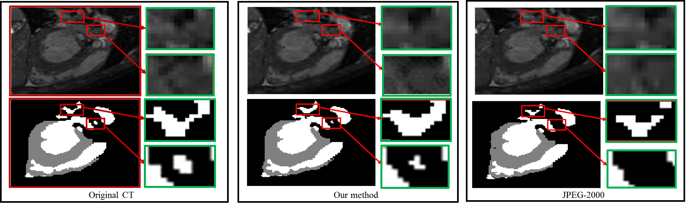

The research in Wen's group aims to address the computing efficiency, design automation, cyber-security and application of current and future computing systems.
Ongoing Research Projects
Topic 1: Software-Hardware Co-design for Efficient and Reliable Neural Network Accelerators, including CMOs and Post-CMOs.
- Design Automation-Debugging Emerging Processing-In-Memory (PIM) Accelerators, e.g. Concurrent (or Real-time) Testing, Diagnosis;
- Design Automation-Fault Tolerance to Mitigate Weight Variability Issue Due to Non-ideal Device Effects;
- Architecture Exploration of Hardware Accelerators, e.g. DRAM/Memristor-based PIM, FPGA;
- Hardware-Friendly Deep Learning Algorithms, e.g. Model Compression/Sparsity;
- Neuromorphic Computing, e.g. Time/Rate-based Bio-plausible Spiking Neural Network.
Selected Publications:
- DAC2020: Qi Liu, Tao Liu, Zihao Liu, Wujie Wen and Chengmo Yang, “Monitoring the Health of Emerging Neural Network Accelerators with Cost-effective Concurrent Test”, Proc. ACM/IEEE 57th Design Automation Conference (DAC), San Francisco, CA, 2020, pp. 1-6. (Acceptance rate: 228/991=23.0%)
- ECCV2020: Xiaolong Ma, Wei Niu, Tianyun Zhang, Sijia Liu, Sheng Lin, Hongjia Li, Wujie Wen, Xiang Chen, Jian Tang, Kaisheng Ma, Bin Ren, and Yanzhi Wang, “An Image Enhancing Pattern-based Sparsity for Real-time Inference on Mobile Devices”, Proc. of the 16th European Conference on Computer Vision (ECCV), Sep. 2020, pp. 1-16 (Acceptance rate: 1361/5025=27%)
- ICCAD2019: Tao Liu and Wujie Wen, “Making the Fault-Tolerance of Emerging Neural Network Accelerators Scalable”, Proc. ACM/IEEE 38th International Conference on Computer-Aided Design (ICCAD), Nov. 2019, pp. 1-5. (Invited Tutorial)
- DAC2019: Tao Liu, Wujie Wen, Lei Jiang, Yanzhi Wang, Chengmo Yang, and Gang Quan, “A Fault-Tolerant Neural Network Architecture”, Proc. ACM/IEEE Design Automation Conference (DAC), Las Vegas, NV, 2019, pp. 1-6. (Acceptance rate: 202/815=24.8%)
- HPCA2019: Z. Li, C. Ding, S. Wang, W. Wen, Y. Zhuo, C. Liu, Q. Qiu, W. Xu, X. Lin, X. Qian, and Y. Wang, “E-RNN: Design Optimization for Efficient Recurrent Neural Networks in FPGAs”, Proc. of the 25th International Symposium on High-Performance Computer Architecture (HPCA), Feb. 2019, pp. 69-80. (Acceptance rate: 46/233=19.7%)
- AAAI2019: Y. Wang, Z. Zhan, J. Tang, B. Yuan, L. Zhao, W. Wen, S. Wang, and X. Lin , “Universal Approximation Property and Equivalence of Stochastic Computing-based Neural Networks and Binary Neural Networks”, Proc. of the 33rd AAAI Conference on Artificial Intelligence (AAAI), Feb. 2019, pp. 5369-5376. (Acceptance rate: 1150/7095=16.2%)
- ICCAD2018: Q. Lou, W. Wen and L. Jiang, “3DICT: A Reliable and QoS Capable Mobile Process-In-Memory Architecture for Lookup-based CNNs in 3D XPoint ReRAMs”, IEEE/ACM International Conference On Computer Aided Design (ICCAD), Nov. 2018, pp. 53:1-53:8. (Best Paper Award Nomination from track-Hardware for Embelied Systems, Acceptance rate: 98/396=25%)
- ECCV2018: T. Zhang, S. Ye, K. Zhang, J. Tang, W. Wen, M. Fardad, and Y. Wang, “A Systematic DNN Weight Pruning Framework using Alternating Direction Method of Multipliers”, Proc. of the 15th European Conference on Computer Vision (ECCV), Sep. 2018, pp. 1-16.(Acceptance rate: 717/2439=29%)
- DAC2018: Zihao Liu, Tao Liu, Wujie Wen, Lei Jiang, Jie Xu, Yanzhi Wang and Gang Quan, “
DeepN -JPEG: A Deep Neural Network Favorable JPEG-based Image Compression Framework”, 2018 55th IEEE/EDAC/ACM Design Automation Conference (DAC), June 2018. (Acceptance rate 168/691=24.3%) - ICCAD2017: Tao Liu, Zihao Liu, Fuhong Lin,
Yier Jin, Gang Quan, and Wujie Wen, “MT-Spike: A Multilayer Time-based Spiking Neuromorphic Architecture with Temporal Error Backpropagation", Proc. ACM/IEEE International Conference on Computer-Aided Design (ICCAD), Nov. 2017, pp. 1-8. (Best Paper Nomination from track-Hardware for Embelied Systems, Acceptance rate: 105/399=26%). - ICCAD2016: S. Li, W. Wen, Y. Wang, Q. Qiu, Y. Chen and H. Li, “A Data Locality-aware Design Framework for Reconfigurable Sparse Matrix-Vector Multiplication Kernel", Proc. ACM/IEEE International Conference on Computer Aided Design (ICCAD), Nov. 2016, pp. 1-6. (Acceptance: 97/408 = 24%)
Topic 2: Deep Learning Cross-layer Security/Privacy, Hardware Security.
- Algorithm Attacks from the Hardware Aspect (NSF-SaTC 2011260), e.g. hardware-inspired deep compression as “Invisible Shield” for defense against adversarial attacks by seamlessly integrating the defense into the necessary data and model compression procedures during DNN hardware optimization with minimized cost .
- Hardware Fault injection Attack/Defense;
- Machine Learning (ML) System Security, e.g. the threat of disguising ML service as a stealthy channel to conceal malicious intent, by leveraging the unique properties of error-resilient neural computing, complex model structure, and huge volume of naturally obfuscated binarized model parameters;
- Hardware Security on Emerging Devices;
- Software-Hardware Co-Design of Privacy-Preserving Deep Learning.
Selected Publications:
- ACSAC2020: Tao Liu, Zihao Liu, Qi Liu, Wujie Wen, Wenyao Xu, Ming Li, “
StegoNet: Turn Deep Neural Network into a Stegomalware ”, Proc. ACM 36th Annual Computer Security Application Conference (ACSAC), Austin, TX, Dec. 2020, to appear. (Acceptance rate: 70/302=23%) - ICCAD2020: Qi Liu, Wujie Wen, and Yanzhi Wang, “
Concurrent Weight Encoding-based Detection for Bit-Flip Attack on Neural Network Architecture ”, Proc. ACM/IEEE 39th International Conference on Computer-Aided Design (ICCAD), pp. 1-8, Nov. 2020, to appear. - DAC2020: Nuo Xu, Qi Liu, Tao Liu, Zihao Liu, Xiaochen Guo and Wujie Wen, “Stealing Your Data from Compressed Machine Learning Models”, Proc. ACM/IEEE 57th Design Automation Conference (DAC), San Francisco, CA, 2020, pp. 1-6. (Acceptance rate: 228/991=23.0%)
- MICCAI2020: Zihao Liu, Sicheng Li, Yen-kuang Chen, Tao Liu, Qi Liu, Xiaowei Xu,Yiyu Shi and Wujie Wen, "Orchestrating Medical Image Compression and Remote Segmentation Networks”, the 23rd International Conference on Medical Image Computing and Computer Assisted Intervention (MICCAI) , Lima, Peru, Oct 2020, pp. 1-10. (Early Accept)
- CVPR2019: Zihao Liu, Qi Liu, Tao Liu, Nuo Xu, Xue Lin, Yanzhi Wang, and Wujie Wen, “
Feature Distillation: DNN-Oriented JPEG Compression Against Adversarial Examples”, 2019 IEEE/CVF Conference on Computer Vision and Pattern Recognition (CVPR), June 2019, Long Beach, CA, pp. 860-868. [PDF] [CODE] - WiSec2019: T. Liu and W. Wen, “Deep-evasion: Turn deep neural network into evasive selfcontained cyber-physical malware: poster”, Proceedings of the 12th Conference on Security and Privacy in Wireless and Mobile Networks (WiSec), May 2019, pp. 320-321.
- CCGRID2019: S. Homsi, G. Quan, W. Wen, G. A. Chapparo-Baquero and L. Njilla, “Game Theoretic-Based Approaches for Cybersecurity-Aware Virtual Machine Placement in Public Cloud Clusters”, the 19th IEEE/ACM International Symposium on Cluster, Cloud and Grid Computing (CCGRID), May 2019, pp. 272-281. (Acceptance rate: 47/207=22.7%)
- ICCAD2018: S. Wang, X. Wang, P. Zhao, W. Wen D. Kaeli, P. Chin, and X. Lin, “Defensive dropout for hardening deep neural networks under adversarial attacks”, IEEE/ACM International Conference On Computer Aided Design (ICCAD), Nov. 2018, pp. 71:1-71:8. (Best Paper Award Nomination, Acceptance rate: 98/396=25%)
- HOST2018: Tao Liu, Wujie Wen
and Yier Jin, “SIN2: Stealth Infection on Neural Network – A Low-cost Agile Neural Trojan Attack Methodology”, Proc. IEEE 11th International Symposium onHardware Oriented Security and Trust (HOST), Washington, DC, May 2018, pp. 227-230. (Acceptance rate~26%) - ASP-DAC2018: Q. Liu, T. Liu, Z. Liu, Y. Wang, Y. Jin and W. Wen, “Security Analysis and Enhancement of Model Compressed Deep Learning Systems under Adversarial Attacks", Proc. ACM/IEEE 23rd Asia and South Pacific Design Automation Conference (ASP-DAC), Jan. 2018, pp. 721-726. (Best Paper Award Nomination, 11 out of 271 papers)
- ICCAD2016: C. Yang, B. Liu, W. Wen, M. Barnell, Q. Wu, H. Li, Y. Chen and J. Rajendran, “Security of Neuromorphic Computing: Thwarting Learning Attacks Using Memristor’s Obsolescence Effect", Proc. ACM/IEEE International Conference on Computer Aided Design (ICCAD), Nov. 2016, pp. 1-6. (Acceptance rate: 97/408 = 24%)
- ASP-DAC2016: X. Zhang, G. Sun, Y. Zhang, W. Wen, Y. Chen, H. Li, “A Novel PUF based on Cell Error Rate Distribution of STT-RAM", Proc. ACM/IEEE 21th Asia and South Pacific Design Automation Conference (ASP-DAC), Jan. 2016, pp. 342-347. (Acceptance rate: 94/274 = 34.3%)
- ISVLSI2016: K. Shamsi, Y. Jin and W. Wen, “Hardware Security Challenges Beyond CMOS: Attacks and Remedies", Proc. IEEE Computer Society Annual Symposium on VLSI (ISVLSI), Jul. 2016, pp. 200-205 (Invited Special Session).
Topic 3: Applications-AI-Assisted Medical Imaging, Machine-Vision (NOT Human-Vision) Oriented System Design, e.g. edge computing/IoT.
- The key observation is that deep learning system (machine vision) perceives image inputs in a completely different way from that of human vison system. This difference should be precisely investigated and fully utilized when designing new intelligent systems, that is, re-architecting existing data compression and computation techniques (tailored for human vision) to be ``machine vision” oriented for better efficiency and security under the context of deep learning.

Selected Publications:
- MICCAI2020: Qi Liu, Han Jiang, Tao Liu, Zihao Liu, Sicheng Li, Wujie Wen and Yiyu Shi, "Defending Deep Learning-based Biomedical Image Segmentation from Adversarial Attacks: A Low-cost Frequency Refinement Approach”, the 23rd International Conference on Medical Image Computing and Computer Assisted Intervention (MICCAI) , Lima, Peru, Oct 2020, pp. 1-9. (Early Accept)
- MICCAI2020: Zihao Liu, Sicheng Li, Yen-kuang Chen, Tao Liu, Qi Liu, Xiaowei Xu,Yiyu Shi and Wujie Wen, "Orchestrating Medical Image Compression and Remote Segmentation Networks”, the 23rd International Conference on Medical Image Computing and Computer Assisted Intervention (MICCAI) , Lima, Peru, Oct 2020, pp. 1-10. (Early Accept)
- CVPR2019: Zihao Liu, Xiaowei Xu, Tao Liu, Qi Liu, Yanzhi Wang, Yiyu Shi, Wujie Wen, Meiping Huang, Haiyun Yuan and Jian Zhuang, “
Machine Vision Guided 3D Medical Image Compression for Efficient Transmission and Accurate Segmentation in the Clouds”, 2019 IEEE/CVF Conference on Computer Vision and Pattern Recognition (CVPR), June 2019, Long Beach, CA, pp. 12687-12696. [PDF] - ICC2018: Hang Wu, Lixing Chen, Cong Shen, Wujie Wen and Jie Xu, “Online Geographical Load Balancing for Energy-Harvesting Mobile Edge Computing”, IEEE International Conference on Communications (ICC) 2018 Green Communications Systems and Networks Symposium, May. 2018.
Sponsors: